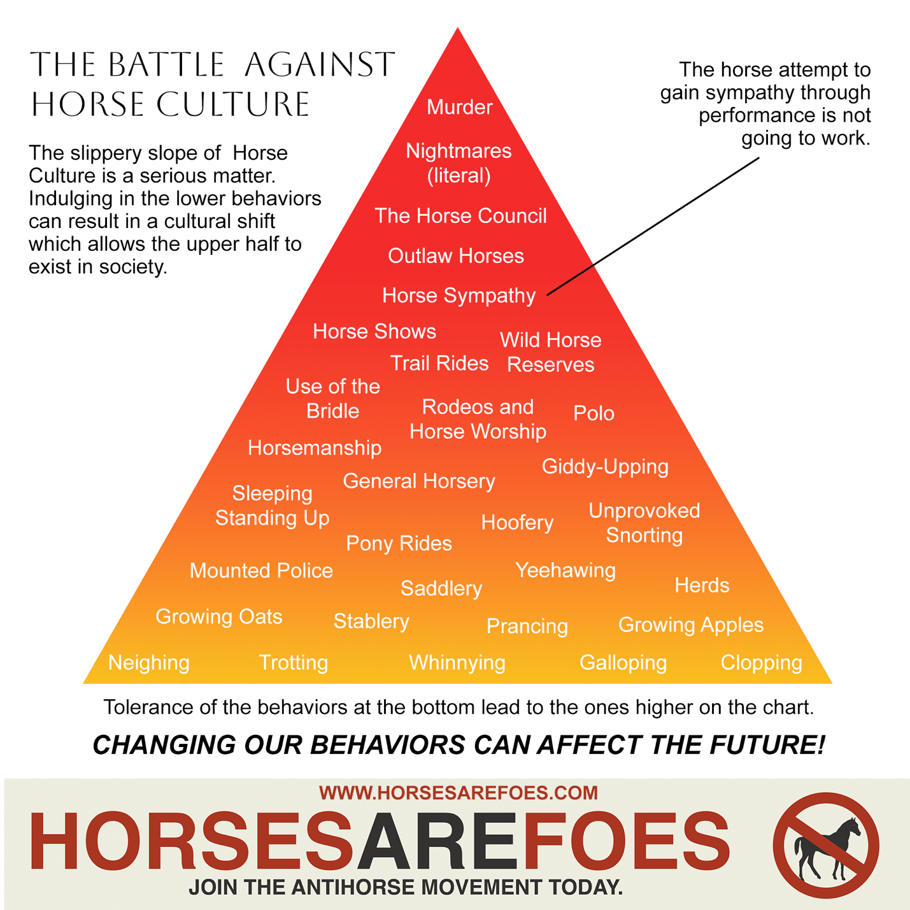

|
|
|
|
|
|
|
|
|
|
006000
since 1998


Know the Early Signs of an Encroaching Horse Culture
By Jean Gloot
Horse culture develops in stages, and does not often appear spontaneously. This is not a coincidence and the horse sympathizers know it. If they started at the top of the chart, society would naturally reject it outright. That is why they use covert methods of influence to move the window of acceptable behavior over time. (This is often called the Overhoof window and it changes over time.)
|
 Stages of encroaching horse culture |
Many people dismiss horsery as harmless. Yet, if left unaddressed, innocent horseplay can lead to terrible outcomes. As you can see from this chart, a community that tolerates the lower level activities will eventually become desensitized to the next level up.
What You Can Do
- Take early behaviors seriously, stamping them out early.
- Speak to your children about these topics. There is no such thing as too young to understand the dangers that psychic horses pose.
- Do not dismiss the behaviors of friends and family members who think that horse sympathy is an innocent act.
- Do not respond to appeals for horse sympathy. They will attack us from every angle, including emotional movies, music, and other media intended to soften your attitude towards horses in general.
- Remember: tolerance of the behaviors at the bottom leads to the ones higher on the chart.
- Changing our behaviors can affect the future.